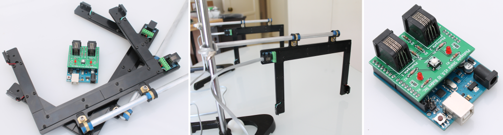

Project Documentation¶
Documentation for the Educational photogate kit for Arduino (EDU-01).

The photogate kits include the following parts:
- Photogate shield for Arduino
- Pair of photogates: pre-assembled and ready to use
- Pair of photogate cables (7 ft long RJ11 cables)
License¶
This is an open source hardware project licensed under the Creative Commons Attribution 3.0 License.
Resources¶
- KiCad and Gerber files - https://bitbucket.org/iorodeo/photogate_shield
- Mechanical drawings, laser cutting files, py2gcode and gcode for CNC machining - https://bitbucket.org/iorodeo/photogates
- Ardino firmware and PC software - https://bitbucket.org/iorodeo/photogate_software